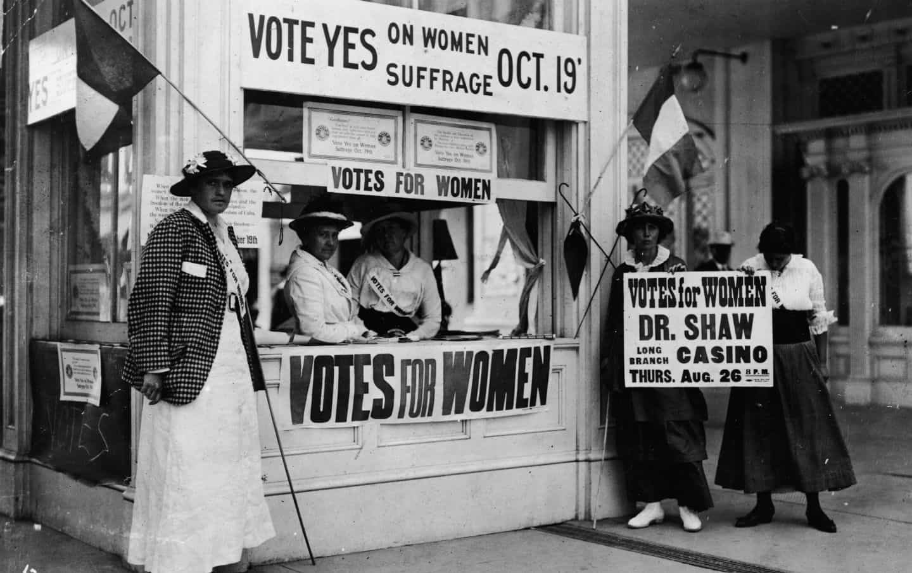

Edgar Tru is a Southern-based objectivist, natural-minded contrarian, and eleutheromania. Follow me on Gab.


What is a liberal? What is a conservative? Many will have different words to describe these terms, and often conflating them with Democrat or Republican.
A conservative does not have to be part of the Republican Party. A conservative does not have to be a wardog. A conservative could be a socialist on a nationalist level. Many have this mainstream idea about what a liberal and conservative are. And many in the political arena fly under the conservative banner when, in reality, they are an adversary to the very foundation of conservatism. Perhaps not today, or next year. But sooner or later, their adherence to liberalism will craft a political and cultural snowball effect which shall be the death of their set society.
So, how does one identify a liberal in disguise, or in denial?

I hold to the claim that allowing females to vote was a rotten call of judgement by men. And, to this day, there are ‘conservatives’ who support this decision. Personally, I find it anti-conservative and pro-liberal to allow women a vote. That doesn’t equate to hating them but rather recognizing they lack logic which, by their very nature, means they cannot vote in accordance with law and order, safety and security. It isn’t complex; unless, of course, you’re a female in which you may not possess the intellect to grasp the overall societal implications of such a manner.
Women like Ann Coulter or Faith Goldy are rare. A beautiful rarity, I might add. In truth, I’d vote for Faith Goldy for mayor of Toronto. I do not dwell there, but I’d support a female who is anti-immigration and pro-borders. I’d vote for Ann Coulter as US President. They both have more backbone than any contemporary limp-wrist Western man. But, again, they are rarities.
Conservatism has a foundation. It does not stray from tradition. In the Ancient World, men dominated and women submitted, or were put in their place if they were too disobedient. Any man, or woman, who supports women’s right to vote, in terms of political power, is liberal-minded. Beware of those prancing around right-winged circles who still hold to this delusional libertarian-esque mentality. They are not conservative in their hearts of hearts.
I’d be fine living in a libertarian society. How cool would that be? I get to live as I please and, as long as I don’t harm another, I am free to be myself. What a glamorous fantasy!
It is a fantasy. That’s not how the real world operates. If it did, I’d subscribe to that ideology. But human nature shall never allow it. In conveying that, it strikes me liberal as hell the one who dares advocate for such a society. They are not only defying human nature, but they are straying from conservatism by giving far too much freedom, on such an irresponsible level, to the citizens of that set society. Libertarianism, along with communism and anarchy, are all ludicrous because they stand on one similar basis: human beings can get along and play nicely.
Less government is, in my view, not the solution. I do not like it, but my observations direct me this way, in accordance with maintaining law and order. Some claim the solution to the system is… no system? Sorry but that’s childish, stupid and fucking foolish. It’s an immature, irrational worldview based on lunacy.
Imagine this: we’re all standing around and, just to our left, is an open door. Inside are the controls of all of society. The libertarian says we are all going to behave and no one is to enter that door because ‘freedom’ and ‘liberty’ are totally in fashion. Well, human nature will give way and, before the libertarian can finish their line of piffle, someone has already run inside that door, locked it, and is now boss.
Libertarians aren’t really that intelligent.
I personally do not have any qualms with Dave Rubin. He is one of the reasons I’ve found my way to conservatism. He began talking to a variety of different guests which, over time, led me to one character, then another until it networked toward the alternative right (or dissident right), etc. I could most likely get along just fine with the man. But he is liberal. And he is a progressive in infancy.
His ideas, if actually obtained on a societal level, would be fine. Live and let live. It’s a fantasy but, if manifested in reality, would be fine. The conundrum is human nature, along with the political and cultural snowball effect of liberalism and its ideals and political decisions made within a society. After women were allowed to vote, it led, many years later, to females on the frontlines of war weakening what is supposed to be the self-defense tool of a nation. After gay marriage, it shortly thereafter became bigoted to be against children transitioning into the opposite sex. There are political and cultural snowball effects to every decision if it strays from orthodoxy.
So, anyone prancing around as a conservative, and believes women should have the same opportunities as a man, are liberal. And, by extension, a progressive in infancy. They may themselves not turn progressive, but their adherences will trickle down to the latter generations allowing a gateway toward leftism.
People, such as Dave Rubin, are gateways into leftism. Not today, or even next year. But, in time, it will lead toward that direction.
We must have comrades if one desires survival over death. Not everyone who is liberal (in disguise or denial) is your adversary. Not for now, at least. But be aware of their worldview and adherences because, again, there is a very serious thing to understanding human nature and the political and cultural snowball effects of the liberal mindset.
It is not wise to constantly bicker at those who will, if civil unrest breaks out, ultimately land on your side. But, again, understanding the giveaways of the liberal mindset may very well be important in identifying a little problem in the many years to come.
Read Next: Why Are So Many Women Liberals?